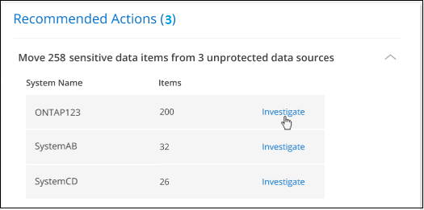
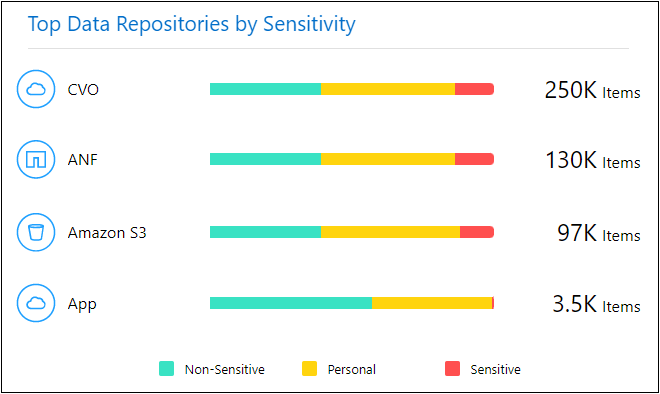
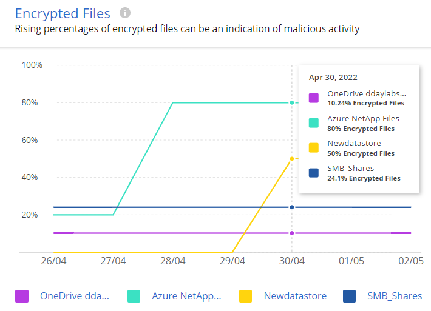
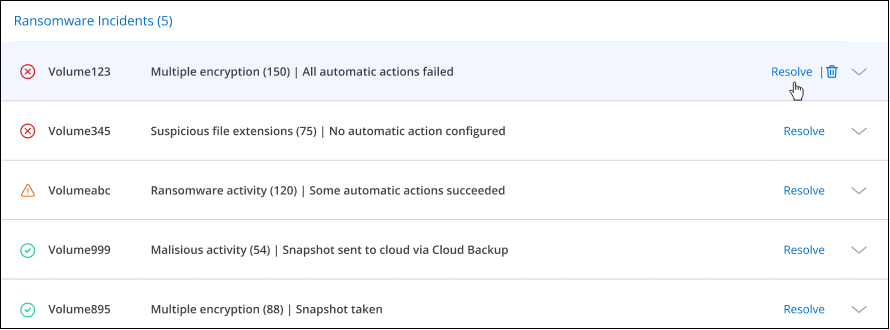

Demander de modifier un document
Demander de modifier un document Modifier sur GitHub
Modifier sur GitHub Guide des contributeurs
Guide des contributeursGestion des recommandations en matière de cybersécurité pour vos sources de données
Contributeurs
Utilisez le tableau de bord protection contre les attaques par ransomware pour afficher une vue d’ensemble de la résilience cybernétique de tous vos environnements de travail et sources de données BlueXP (anciennement Cloud Manager). Vous pouvez explorer chaque zone pour obtenir plus de détails et des corrections possibles.
Dans le menu de navigation de gauche BlueXP, sélectionnez protection > protection contre les attaques par ransomware.
Score de protection contre les ransomwares et actions recommandées
Le panneau Score de protection contre les ransomwares vous permet de découvrir facilement comment résilience de vos données face à une attaque par ransomware. Il s’agit d’une agrégation de toutes les actions recommandées pour améliorer la sécurité des données et la résilience informatique. Ce panneau fonctionne conjointement avec le panneau actions recommandées. Le panneau Score de protection contre les attaques par ransomware comporte deux parties :
-
Score global de protection de vos données (protection à 0 à 100 %).
La note est basée sur un calcul pondéré de toutes les recommandations possibles.
-
Combien d’actions recommandées sont disponibles pour élever votre protection à 100% - si vous mettez en œuvre les recommandations.
Les trois types d’actions recommandées sont conformes à la "Cadre NIST pour la cybersécurité":
-
Protéger
-
Détection
-
Reprise après incident
-

Dans cette page d’exemple, il n’y a qu’un seul type de recommandation pour la catégorie "protéger". Et cette recommandation est pertinente pour 258 dossiers.
Ce panneau prend en charge les environnements de travail et les sources de données qui ont été ajoutées au Cloud Data Sense.
Notez que des recommandations s’appliquent par source de données. Ainsi, si la même recommandation concerne 3 sources de données, elle sera comptée comme 3 recommandations.
Vous pouvez cliquer sur Pour développer chaque action recommandée, comme indiqué ci-dessous.

Pour afficher la liste détaillée des données qui ont été identifiées comme ayant une action recommandée, cliquez sur le bouton Investigation et vous serez redirigé vers la page recherche de détection de données cloud avec la liste de tous les fichiers qui répondent aux critères de l’action recommandée.
Ensuite, vous pouvez décider si vous voulez appliquer l’action recommandée sur tous ces fichiers, ou sur seulement certains d’entre eux.
Après avoir corrigé l’action recommandée, la prochaine actualisation du panneau Score de protection contre les attaques par ransomware (toutes les 5 minutes) ajuste le nombre pour le score. Vous pouvez également cliquer sur le bouton Actualiser pour mettre à jour la page maintenant.
Liste des actions recommandées
Actuellement, le seul critère évalué pour une action recommandée est de savoir si vos données sensibles sont stockées sur des sources de données non protégées, sur des sites où le logiciel de protection par ransomware ne peut pas protéger les données. Vous pouvez utiliser Data Sense pour déplacer rapidement ces fichiers vers une source de données plus protégée. Vous allez utiliser la fonctionnalité Data Sense pour "Déplacer les fichiers source vers un partage NFS".
Généralement, votre service INFORMATIQUE applique des règles limitant les données sensibles de certains sites d’entreprise. Cette action recommandée vous permet d’identifier les fichiers qui ont des données sensibles et de les déplacer vers une source de données plus sûre, où les fichiers sensibles PEUVENT être stockés.
Carte de résilience cybernétique
La carte de résilience Cyber est la zone principale du tableau de bord. Il vous permet de visualiser visuellement tous vos environnements de travail et toutes vos sources de données et d’afficher les informations pertinentes relatives à la résilience cybernétique.

La carte se compose de trois parties :
- Panneau gauche
-
Affiche une liste d’alertes pour lesquelles le service surveille toutes vos sources de données. Il indique également le numéro de chaque alerte particulière active dans votre environnement. La présence d’un grand nombre d’un type d’alerte peut être une bonne raison d’essayer de résoudre ces alertes en premier.
- Panneau central
-
Affiche toutes vos sources de données, services et Active Directory dans un format graphique. Les environnements sains ont un indicateur vert et les environnements qui ont des alertes ont un indicateur rouge.
- Panneau droit
-
Après avoir cliqué sur une source de données dotée d’un indicateur rouge, ce panneau affiche les alertes pour cette source de données et fournit des recommandations pour résoudre l’alerte. Les alertes sont triées de manière à ce que les alertes les plus récentes soient répertoriées en premier. De nombreuses recommandations vous conduisent à un autre service BlueXP où vous pouvez résoudre le problème.
Il s’agit des alertes et des corrections proposées actuellement suivies.
| Alerte | Description | Résolution |
|---|---|---|
Taux de cryptage de données élevés détectés |
Une augmentation anormale du pourcentage de fichiers cryptés ou de fichiers corrompus s’est produite dans la source de données. Cela signifie qu’au cours des 7 derniers jours, le pourcentage de fichiers cryptés a augmenté de plus de 20 %. Par exemple, si 50 % de vos fichiers sont cryptés, puis un jour plus tard ce nombre augmente à 60 %, vous verrez cette alerte. |
Cliquez sur le lien pour lancer le "Page investigation de détection de données". Vous pouvez y sélectionner les filtres pour les Working Environment et Category (crypté et corrompu) spécifiques pour afficher la liste de tous les fichiers cryptés et corrompus. |
Des données sensibles avec des autorisations larges détectées |
Des données sensibles sont trouvées dans les fichiers et le niveau d’autorisation d’accès est trop élevé dans une source de données. |
Cliquez sur le lien pour lancer le "Page investigation de détection de données". Vous pouvez y sélectionner les filtres pour les fichiers Working Environment, Sensitivity Level (Sensitivity Level (Sensitive Personal) et Open permissions spécifiques pour afficher la liste des fichiers ayant ce problème. |
Un ou plusieurs volumes ne sont pas sauvegardés via Cloud Backup |
Certains volumes de l’environnement de travail ne sont pas protégés à l’aide de "La sauvegarde dans le cloud". |
Cliquez sur le lien pour lancer Cloud Backup, puis identifiez les volumes qui ne sont pas sauvegardés dans l’environnement de travail, puis décidez si vous souhaitez activer les sauvegardes sur ces volumes. |
Un ou plusieurs référentiels (volumes, compartiments, etc.) de vos sources de données ne sont pas analysés par Data Sense |
Certaines données de vos sources de données ne sont pas analysées à l’aide de "Sens des données cloud" afin d’identifier les problèmes de conformité et de confidentialité, et de trouver des opportunités d’optimisation. |
Cliquez sur le lien pour lancer Data Sense et activer la numérisation et le mappage des éléments qui ne sont pas numérisés. |
L’anti-ransomwares intégré n’est pas actif pour tous les volumes |
Certains volumes du système ONTAP sur site ne disposent pas de la "Fonctionnalité NetApp anti-ransomware" activé. |
Cliquez sur le lien et vous êtes redirigé vers le of ONTAP systems hardening,Renforcez le panneau de l’environnement ONTAP et à l’environnement de travail avec le problème. Vous y trouverez des informations sur la meilleure façon de résoudre le problème. |
La version ONTAP n’est pas mise à jour |
La version du logiciel ONTAP installée sur vos clusters n’est pas conforme aux recommandations de la "Guide NetApp de renforcement de la sécurité des systèmes ONTAP". |
Cliquez sur le lien et vous êtes redirigé vers le of ONTAP systems hardening,Renforcez le panneau de l’environnement ONTAP et à l’environnement de travail avec le problème. Vous y trouverez des informations sur la meilleure façon de résoudre le problème. |
Les snapshots ne sont pas configurés pour tous les volumes |
Certains volumes de l’environnement de travail ne sont pas protégés en créant des snapshots de volume. |
Cliquez sur le lien et vous êtes redirigé vers le of ONTAP systems hardening,Renforcez le panneau de l’environnement ONTAP et à l’environnement de travail avec le problème. Vous y trouverez des informations sur la meilleure façon de résoudre le problème. |
L’audit des opérations de fichiers n’est pas activé pour tous les SVM |
Certains ordinateurs virtuels de stockage de l’environnement de travail ne disposent pas d’un audit du système de fichiers activé. Il est recommandé de suivre les actions des utilisateurs sur vos fichiers. |
Cliquez sur le lien et vous êtes redirigé vers le of ONTAP systems hardening,Renforcez le panneau de l’environnement ONTAP et à l’environnement de travail avec le problème. Vous pouvez déterminer si vous devez activer l’audit NAS sur vos SVM. |
Principaux référentiels de données en fonction de la sensibilité des données
Le panneau Top Data Repositories by Sensitivity Level répertorie jusqu’aux quatre principaux référentiels de données (environnements de travail et sources de données) contenant les éléments les plus sensibles. Le graphique à barres de chaque environnement de travail est divisé en :
-
Données non sensibles
-
Données personnelles
-
Données personnelles sensibles

Vous pouvez passer le curseur sur chaque section pour voir le nombre total d’éléments dans chaque catégorie.
Cliquez sur chaque zone pour afficher les résultats filtrés dans la page recherche de détection de données afin que vous puissiez approfondir vos recherches.
Contrôle de groupe d’administrateurs de domaine
Le panneau Domain Administrator Group control affiche les utilisateurs les plus récents qui ont été ajoutés à vos groupes d’administrateurs de domaine afin de voir si tous les utilisateurs doivent être autorisés dans ces groupes. Vous devez avoir "A intégré Active Directory" Dans le cloud Data SENSE pour que ce panneau soit actif.

Les groupes d’administration par défaut sont les suivants : « administrateurs », « administrateurs de domaine », « administrateurs d’entreprise », « administrateurs de clés d’entreprise » et « administrateurs clés ».
Données répertoriées par type d’autorisations ouvertes
Le panneau Open permissions affiche le pourcentage de chaque type d’autorisation existant pour tous les fichiers en cours de numérisation. Le graphique est fourni à partir de Data SENSE et indique les types d’autorisations suivants :
-
Aucun accès ouvert
-
Ouvert à l’organisation
-
Ouvert au public
-
Accès inconnu

Vous pouvez passer le curseur sur chaque section pour afficher le pourcentage et le nombre total de fichiers dans chaque catégorie.
Cliquez sur chaque zone pour afficher les résultats filtrés dans la page recherche de détection de données afin que vous puissiez approfondir vos recherches.
Données répertoriées par les fichiers chiffrés
Le panneau Encrypted Files affiche les 4 principales sources de données avec le pourcentage le plus élevé de fichiers cryptés au fil du temps. Il s’agit généralement d’éléments protégés par un mot de passe. Pour ce faire, il compare les taux de cryptage au cours des 7 derniers jours afin de voir quelles sources de données ont une augmentation supérieure à 20 %. Une augmentation de ce montant pourrait signifier que des attaques par ransomware sont déjà attaqués votre système.

Cliquez sur une ligne pour l’une des sources de données pour afficher les résultats filtrés dans la page recherche de détection de données afin que vous puissiez en rechercher davantage.
Renforcement des systèmes ONTAP
Le panneau Harden Your ONTAP Environment fournit l’état de certains paramètres de vos systèmes ONTAP qui suivent la sécurité du déploiement en fonction du "Guide NetApp de renforcement de la sécurité des systèmes ONTAP" et au "Fonctionnalité ONTAP anti-ransomware" cela détecte et avertit de manière proactive des anomalies d’activité.
Vous pouvez passer en revue les recommandations, puis décider comment vous souhaitez résoudre les problèmes potentiels. Suivez les étapes pour modifier les paramètres des clusters, reporter ces modifications à une autre fois ou ignorer la suggestion.
Cet écran prend en charge à l’heure actuelle les systèmes ONTAP, Cloud Volumes ONTAP et Amazon FSX pour NetApp ONTAP.

Les paramètres suivis sont les suivants :
| Objectif de durcissement | Description | Résolution |
|---|---|---|
ONTAP anti-ransomware |
Pourcentage de volumes sur lesquels un anti-ransomware intégré est activé. Valide uniquement pour les systèmes ONTAP sur site. Une icône d’état verte indique que > 85 % des volumes sont activés. Le jaune indique que 40 à 85 % sont activés. Le rouge indique que < 40 % sont activés. |
"Découvrez comment activer la protection contre les ransomwares sur vos volumes" Utiliser System Manager. |
Audit NAS |
Le nombre de machines virtuelles de stockage pour lesquelles l’audit du système de fichiers est activé. Une icône d’état verte indique que plus de 85 % des SVM ont activé l’audit du système de fichiers NAS. Le jaune indique que 40 à 85 % sont activés. Le rouge indique que < 40 % sont activés. |
"Découvrez comment activer l’audit NAS sur les SVM" Utilisation de l’interface de ligne de commande. |
Version ONTAP |
La version du logiciel ONTAP installée sur vos clusters. Une icône d’état verte indique que la version est actuelle. Une icône jaune indique que le cluster est derrière une ou deux versions de correctif, ou une version mineure pour les systèmes sur site, ou derrière une version majeure pour Cloud Volumes ONTAP. Une icône rouge indique que le cluster est derrière 3 versions de correctif, 2 versions mineures, ou 1 version majeure pour les systèmes sur site, ou derrière 2 versions principales pour Cloud Volumes ONTAP. |
"Découvrez la meilleure façon de mettre à niveau vos clusters sur site" ou "Vos systèmes Cloud Volumes ONTAP". |
Snapshots |
Est la fonctionnalité Snapshot activée sur les volumes de données, ainsi que le pourcentage de volumes ayant des copies Snapshot. Une icône d’état verte indique que > 85 % des volumes ont activé les snapshots. Le jaune indique que 40 à 85 % sont activés. Le rouge indique que < 40 % sont activés. |
"Découvrez comment activer des copies Snapshot de volumes sur vos clusters sur site", ou "Sur vos systèmes Cloud Volumes ONTAP", ou "Sur votre système FSX pour les systèmes ONTAP". |
Statut des autorisations sur vos données stratégiques de l’entreprise
Le panneau _analyse des autorisations de données critiques pour l’entreprise indique l’état des autorisations des données essentielles pour votre entreprise. Cela vous permet d’évaluer rapidement l’efficacité de la protection de vos données stratégiques.

Au départ, ce volet affiche les données basées sur les règles par défaut que nous avons sélectionnées. Mais vous pouvez sélectionner les 2 plus importants de logique de données Policies que vous avez créés pour afficher vos données métier les plus critiques. Découvrez comment "Créez vos règles à l’aide de Data Sense".
Le graphique montre l’analyse des autorisations de toutes les données qui répondent aux critères de vos politiques. Il indique le nombre d’éléments suivants :
-
Ouvert aux autorisations publiques – éléments que Data Sense considère comme ouverts au public
-
Ouvert aux autorisations de l’entreprise – éléments que Data Sense considère comme ouverts à l’organisation
-
Aucune autorisation ouverte : les éléments que Data Sense considère comme n’ayant aucune autorisation ouverte
-
Autorisations inconnues : éléments que Data Sense considère comme des autorisations inconnues
Passez le curseur sur chaque barre des graphiques pour afficher le nombre de résultats dans chaque catégorie. Cliquez sur une barre et la page recherche de détection de données s’affiche pour vous permettre d’examiner plus en détail les éléments ayant des autorisations ouvertes et si vous devez apporter des ajustements aux autorisations de fichier.
État de sauvegarde des données stratégiques de votre entreprise
Le panneau Backup Status montre comment les différentes catégories de données sont protégées à l’aide de Cloud Backup. Cela identifie la façon dont les catégories de données les plus importantes sont sauvegardées au cas où vous devez récupérer des données suite à une attaque par ransomware. Ces données représentent visuellement le nombre d’éléments d’une catégorie spécifique dans un environnement de travail sauvegardés.
Cet écran affiche uniquement les environnements de travail ONTAP et Cloud Volumes ONTAP sur site qui sont déjà sauvegardés à l’aide de Cloud Backup et scannés à l’aide de Cloud Data Sense.

Dans un premier temps, ce volet affiche les données basées sur les catégories par défaut que nous avons sélectionnées. Mais vous pouvez sélectionner les catégories de données que vous souhaitez suivre ; par exemple, codes fichiers, contrats, etc. Consultez la liste complète de "catégories" Disponibles auprès de Cloud Data Sense pour vos environnements de travail. Sélectionnez ensuite jusqu’à 4 catégories.
Une fois les données remplies, passez le curseur de la souris sur chaque carré des graphiques pour afficher le nombre de fichiers sauvegardés dans la même catégorie dans l’environnement de travail. Un carré vert signifie que 85 % ou plus de vos fichiers sont en cours de sauvegarde. Un carré jaune signifie que 40 % à 85 % de vos fichiers sont en cours de sauvegarde. Un carré rouge signifie que 40 % ou moins de fichiers sont en cours de sauvegarde.
Vous pouvez cliquer sur le bouton Cloud Backup à la fin de la ligne pour accéder à l’interface Cloud Backup afin d’activer la sauvegarde sur plus de volumes dans chaque environnement de travail.
Vulnérabilités du système de stockage
Le panneau « Storage system VulnerVulnerfaille » affiche le nombre total de vulnérabilités de sécurité élevées, moyennes et faibles que l’outil conseiller numérique Active IQ a trouvées sur chacun de vos clusters ONTAP. Il est important d’immédiatement vérifier que vos systèmes ne sont pas ouverts aux attaques.
-
BlueXP Connector doit être installé sur votre site, non déployé auprès d’un fournisseur cloud.
-
Vous devez disposer d’un cluster ONTAP sur site
-
Le cluster est configuré en Active IQ
-
Vous devez avoir enregistré un compte NSS existant dans BlueXP pour afficher vos clusters et pour afficher l’interface utilisateur du conseiller numérique Active IQ.
Notez que vous pouvez afficher le conseiller numérique Active IQ directement en sélectionnant Santé > Conseiller numérique dans le menu BlueXP.
Cliquez sur le type de vulnérabilité (élevée, moyenne, faible) que vous souhaitez afficher pour l’un de vos clusters et vous êtes redirigé vers la page failles de sécurité dans le Conseiller numérique Active IQ. (Vous trouverez plus d’informations sur cette page dans le "Documentation du conseiller digital Active IQ".) Vous pouvez visualiser les vulnérabilités, puis suivre l’action recommandée pour résoudre le problème. Souvent, la résolution est de mettre à niveau votre logiciel ONTAP à l’aide d’une version instantanée ou complète qui résout cette vulnérabilité.
Les données de vos volumes protégés à l’aide de SnapLock
La technologie NetApp SnapLock peut être utilisée sur vos volumes ONTAP pour conserver les fichiers sous une forme non modifiée à des fins réglementaires et de gouvernance. Vous pouvez allouer des fichiers et des copies Snapshot sur le stockage WORM (Write Once, Read Many) et définir des périodes de conservation pour ces données protégées WORM. "En savoir plus sur SnapLock".
Le panneau Critical Data immuabilité affiche le nombre d’éléments de vos environnements de travail protégés contre les modifications et suppressions sur le stockage WORM grâce à la technologie ONTAP SnapLock. Vous pouvez ainsi afficher la quantité de données dont la copie est inaltérable, pour mieux comprendre vos plans de sauvegarde et de restauration par rapport aux attaques par ransomware.
-
BlueXP Connector doit être installé sur votre site, non déployé auprès d’un fournisseur cloud.
-
Vous devez disposer d’un cluster ONTAP sur site
-
Une licence SnapLock doit être installée sur au moins un nœud du cluster
Au départ, ce volet affiche les données basées sur les règles par défaut que nous avons sélectionnées. Mais vous pouvez sélectionner les 2 plus importants de logique de données Policies que vous avez créés pour afficher vos données métier les plus critiques. Découvrez comment "Créez vos règles à l’aide de Data Sense".
Le panneau affiche les informations suivantes pour les données correspondant aux stratégies sélectionnées :
-
Le nombre de fichiers stratégiques dans tous vos environnements de travail numérisés configurés pour utiliser SnapLock.
-
Le nombre de fichiers stratégiques dans tous vos environnements de travail analysés, à l’exception de ceux configurés pour SnapLock. Notez que certains de ces fichiers peuvent être protégés à l’aide d’un mécanisme autre que SnapLock.
Les stratégies de détection de données qui incluent les filtres suivants ne sont pas disponibles dans la liste déroulante pour les stratégies sélectionnées car elles départir les zones de recherche importantes :
-
Nom de l’environnement de travail
-
Type d’environnement de travail
-
Référentiel de stockage
-
Chemin des fichiers
Ainsi, lorsque vous créez des stratégies pour afficher vos données stratégiques dans le panneau « conservation des données critiques », veillez à garder cela à l’esprit.
Incidents d’attaque par ransomware détectés sur vos systèmes
Les incidents d’attaques par ransomware détectés sur vos systèmes gérés s’affichent sous forme d’alertes dans le panneau ransomware incidents. Cela inclut la corruption des données et les événements de chiffrement. Le panneau affiche le nombre de fichiers cryptés identifiés dans le volume suspect, les types d’extensions de fichier et le moment où l’attaque s’est produite.

Actuellement, la prise en charge concerne les clusters ONTAP sur site qui exécutent la protection autonome contre les ransomwares (ARP). ARP utilise l’analyse des charges de travail dans les environnements NAS (NFS et SMB) pour détecter et avertir de manière proactive les activités anormales qui pourraient indiquer une attaque par ransomware. "En savoir plus".
Pour analyser les incidents, vous devez avoir installé et configuré NetApp Cloud Secure. "En savoir plus sur Cloud Secure". Vous pouvez ensuite cliquer sur le bouton Analyze pour obtenir des recommandations pour les étapes suivantes de la résolution du problème.
-
BlueXP Connector doit être installé sur votre site, non déployé auprès d’un fournisseur cloud.
-
Vous devez disposer d’un cluster ONTAP sur site qui exécute ONTAP 9.10.1 ou version ultérieure
-
Vous devez disposer d’une licence MT_EK_MGMT (ONTAP 9.10) ou anti-ransomware (ONTAP 9.11.1 +) sur au moins un nœud du cluster
-
La solution NetApp ARP doit avoir été activée pendant une période d’apprentissage initiale (également appelée « exécution à sec ») pendant 30 jours avant de passer au « mode actif », offrant ainsi suffisamment de temps pour évaluer les caractéristiques de la charge de travail et signaler de façon adéquate les attaques par ransomware suspectes.